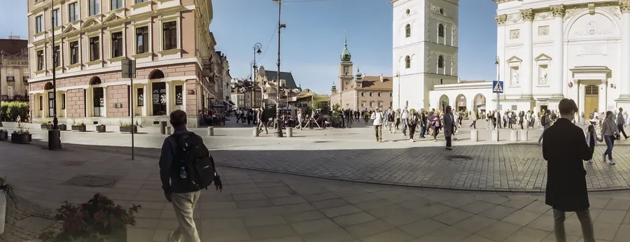
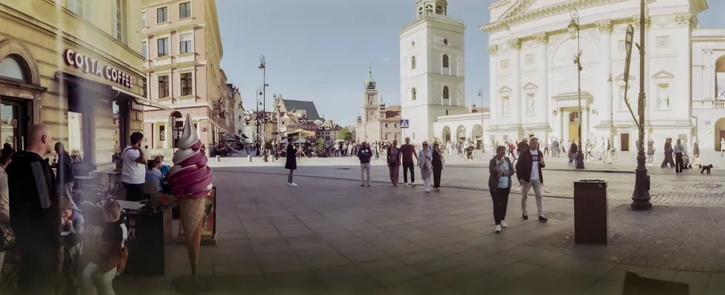
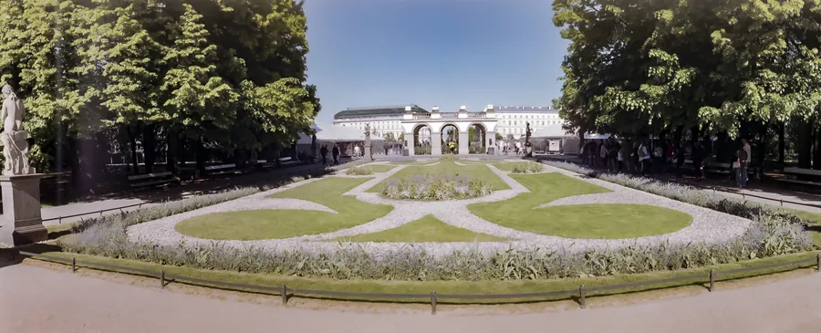
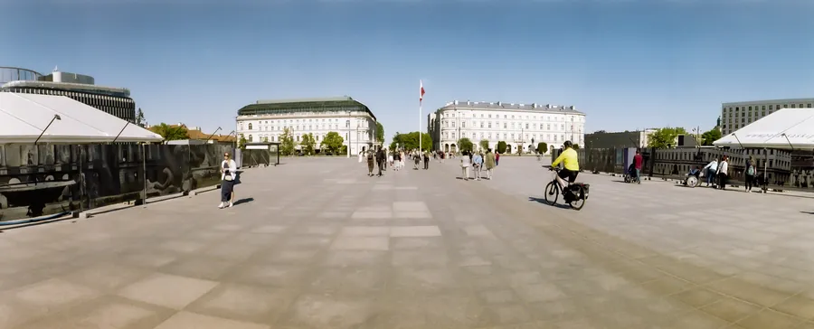
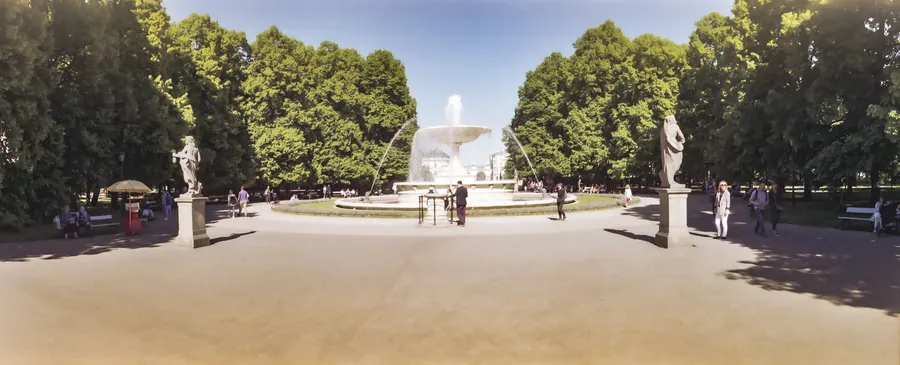
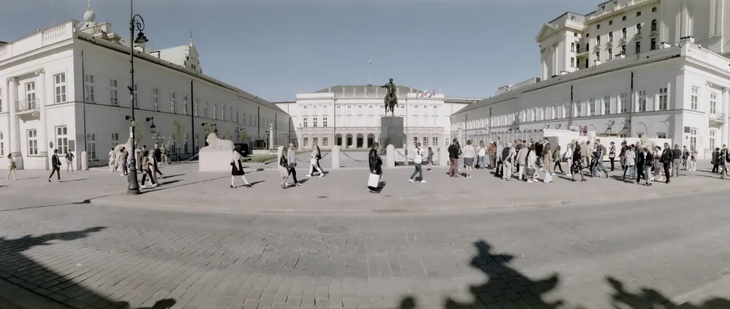
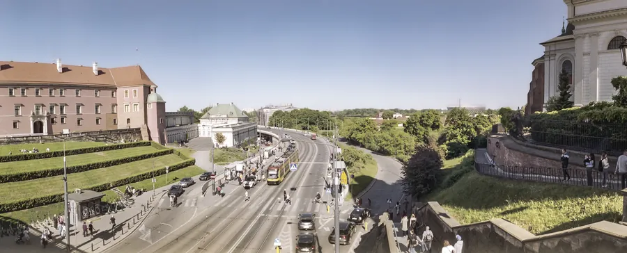

Przejdź do treści
Zenbliski
Menu
Archiwalne
Analogowe
Kolekcja
Akcesoria foto
Materiały reklamowe
Artykuły – blog
Foto ciekawostki
Cyfrowe
Analogowe
Horizon 202, Fujicolor 200, Warszawa 2024 r.
Aparat
Horizon 202
Film
Fujicolor 200
Miejsce
Warszawa, 2024 r.







Poprzednia
Nikon F2A, Fuji X-Tra 400, Warszawa, Wołomin 2022 r.
Następna
Minolta Hi-Matic S2, Fomapan 100, Nowe Miasto 2025 r.